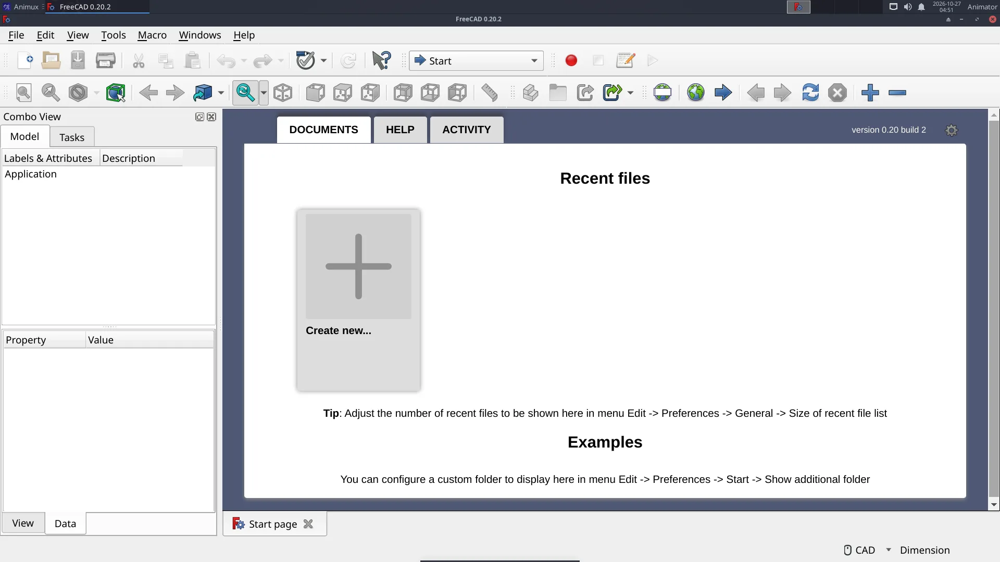
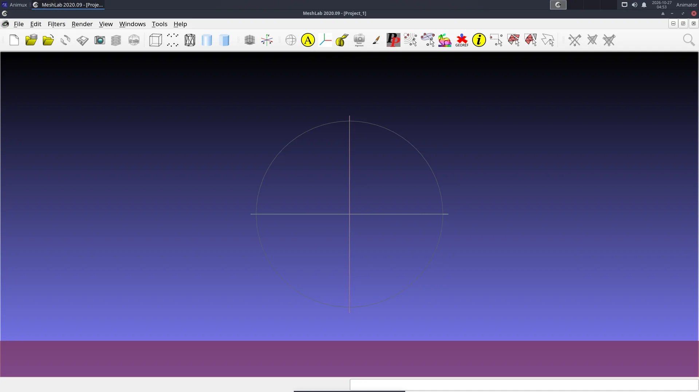
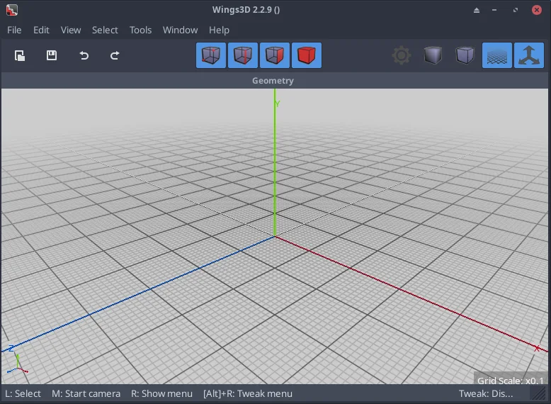

| Program | Use it when | Start |
|---|---|---|
| FreeCAD 0.20 | Props, sets and machines that need exact measurements, or parts for 3D printing. Parametric: change a number and the model updates. | freecad |
| OpenSCAD 2021.01 | You prefer to describe an object in a few lines of code (cube, cylinder, difference). Perfect for repeated parts. |
openscad |
| Wings 3D 2.2 | You want a small, simple polygon modeller for low-poly models and learning box modelling. | wings3d |
| MeshLab 2020.09 | You need to repair, clean or simplify scans and heavy meshes (photogrammetry, 3D scanners). | meshlab |
| Geomview 1.9 | You view mathematical surfaces (OFF files). Mostly for teaching. | geomview |
All are in 3D Animation → Modellers.


Moving models into Blender#
| From | Export as | In Blender |
|---|---|---|
| FreeCAD | File → Export → OBJ or STL (select the object first) | File → Import → Wavefront (.obj) |
| OpenSCAD | File → Export → STL (render with F6 first) | File → Import → STL |
| Wings 3D | File → Export → glTF or OBJ | File → Import → glTF 2.0 |
| MeshLab | File → Export Mesh As → PLY or OBJ | File → Import → Stanford PLY |
Check the scale after importing: CAD programs work in millimetres, Blender in metres. Use the import dialog's Scale (0.001 for mm).
OpenSCAD from the command line#
openscad -o bracket.stl bracket.scad


Wings 3D#
Wings 3D opens with an empty scene. Right-click in the grid to get the menu, for example Cube; select faces, edges or vertices with the four red cube buttons at the top and right-click again for the tools (Extrude, Bevel, Smooth …).


Wings 3D opens no window (r16 only)
Fixed in r16.1 (_25): the menu entry and the wings3d command start it safely. On Animux r16 (_21 and earlier), Wings 3D opens no window on computers without a graphics-card OpenCL driver: the processor OpenCL driver breaks its start-up. Start it from a terminal like this instead:
OCL_ICD_VENDORS=/nonexistent wings3d
The package animux-menus 1.0.17 fixes the menu entry (Wings 3D then always starts this way); see Guide updates for installing a package file.